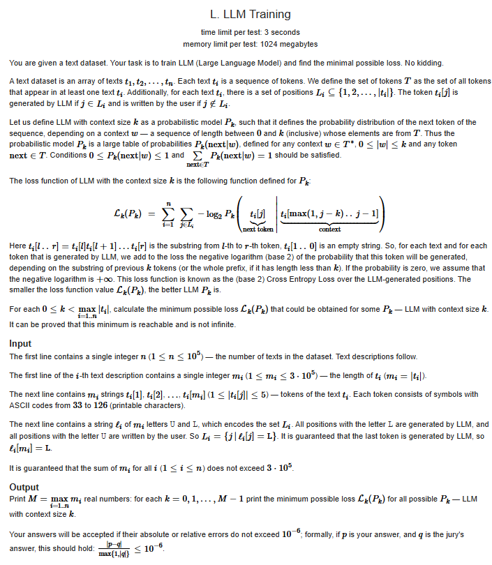

Setup
Dataset: $n$ texts $t_1, \ldots, t_n$. Each text marks some positions as LLM-generated (set $L_i$). For each $k$ from $0$ to $M-1$ where $M = \max_i |t_i|$, find the minimum cross-entropy loss
over every valid context-$k$ probabilistic model $P_k$. Constraints: $\sum |t_i| \le 3 \cdot 10^5$.
The model is a lookup table
There is no training. $P_k(\cdot \mid w)$ is a free distribution per context $w$, so we minimize each context independently. For context $w$ with next-token counts $c_w(x)$ summing to $C_w$, minimize
Gibbs gives $p_x = c_w(x) / C_w$ with optimum value $C_w \log_2 C_w - \sum_x c_w(x) \log_2 c_w(x)$. So
summed over distinct length-$\min(j-1, k)$ contexts that precede an L-position. The problem reduces to: for every $k$, group L-positions by their length-$k$ context, fast.
Trie blows up
A trie of reversed prefixes ending at L-positions has up to $\Theta(M^2) \approx 9 \cdot 10^{10}$ nodes when one text is $3 \cdot 10^5$ tokens long. Dead.
Generalized suffix automaton
Build a generalized SAM over all texts (integer alphabet, map<int,int> per state). It has $O(N)$ states. For each L-position $(i, j)$ identify the state $s^*_{i,j}$ representing the full prefix $t_i[1..j-1]$.
In the SAM's suffix-link tree, state $s$ holds strings of lengths $[\mathrm{minlen}(s), \mathrm{maxlen}(s)]$. The length-$k$ context of $(i, j)$ for $k \le j-1$ is a suffix of its prefix, and that suffix lives in the unique ancestor of $s^*_{i,j}$ whose length range covers $k$.
For a fixed state $s$ with $a = \mathrm{minlen}(s)$, $b = \mathrm{maxlen}(s)$:
- $k \in [a, b]$: every L-position in $s$'s suffix-link subtree lands at $s$. Contribute the entropy of all their next-tokens.
- $k > b$: only L-positions whose $s^* = s$ stay (descendants moved deeper). Contribute the entropy over just those.
Both are interval updates on the answer array. Difference array, prefix-sum at the end.
Subtree entropies via small-to-large
For each state we need $\sum_x f(c(x))$ where $f(c) = c \log_2 c$. Walk the suffix-link tree post-order, merging child next-token count maps small-to-large into the parent. Maintain $\sum_x f(c(x))$ incrementally: when count of $x$ changes from $a$ to $a + \Delta$, add $f(a + \Delta) - f(a)$.
Each token participates in $O(\log N)$ merges, total $O(N \log^2 N)$.
Full code
Click to expand (~340 lines)
// CF 2181L - LLM Training
// the trick: the optimal model is just the empirical distribution
// (gibbs inequality). once you see that, the "training" goes away and
// what's left is: group every L-position by its length-k context and
// compute entropy of next-tokens per group.
//
// naive is O(N*M). need to share work across k.
//
// build a generalized suffix automaton over all texts. each L-position
// at (i,j) sits at some SAM state s* (the state for prefix t_i[1..j-1]).
// for context length k:
// - it lives at s* if minlen(s*) <= k
// - otherwise it lives at some ancestor of s* in the suffix-link tree
//
// so each SAM state s contributes to ans[k]:
// - for k in [minlen(s), maxlen(s)]: entropy over ALL L-positions in
// its suffix-link subtree
// - for k > maxlen(s): entropy over only L-positions whose s* == s
// (everyone else has moved on to deeper states)
//
// both are range updates -> difference array.
//
// subtree entropies are aggregated via small-to-large on the suffix-link
// tree, maintaining sum_x f(c(x)) incrementally so we never recompute.
//
// precision: doubles are fine, problem allows 1e-6.
#include <bits/stdc++.h>
using namespace std;
// f(c) = c*log2(c), with f(0)=0. precomputed because we call it a LOT
// during the small-to-large merge and log() isn't cheap.
static vector<double> Fcache;
static inline double f_of(long long c) {
if (c <= 0) return 0.0;
if ((size_t)c < Fcache.size()) return Fcache[(size_t)c];
return (double)c * log2((double)c);
}
// generalized SAM. tokens are ints (huge alphabet) so map<int,int> per
// state. between texts we just reset `last` to root; that's the whole
// "generalized" trick.
struct SAM {
struct State {
int len;
int link;
map<int, int> next;
};
vector<State> st;
int last;
void init() {
st.clear();
st.reserve(4);
st.push_back({0, -1, {}});
last = 0;
}
void reset_last() { last = 0; }
int extend(int c) {
// generalized-SAM gotcha: if `last` already has a transition on c,
// the string we'd be adding has been seen before. don't make a
// new state, just walk into the existing one (with a possible clone).
if (st[last].next.count(c)) {
int p = last;
int q = st[p].next[c];
if (st[p].len + 1 == st[q].len) {
last = q;
return q;
}
int clone = (int)st.size();
st.push_back({st[p].len + 1, st[q].link, st[q].next});
while (p != -1 && st[p].next.count(c) && st[p].next[c] == q) {
st[p].next[c] = clone;
p = st[p].link;
}
st[q].link = clone;
last = clone;
return clone;
}
int cur = (int)st.size();
st.push_back({st[last].len + 1, -1, {}});
int p = last;
while (p != -1 && !st[p].next.count(c)) {
st[p].next[c] = cur;
p = st[p].link;
}
if (p == -1) {
st[cur].link = 0;
} else {
int q = st[p].next[c];
if (st[p].len + 1 == st[q].len) {
st[cur].link = q;
} else {
int clone = (int)st.size();
st.push_back({st[p].len + 1, st[q].link, st[q].next});
while (p != -1 && st[p].next.count(c) && st[p].next[c] == q) {
st[p].next[c] = clone;
p = st[p].link;
}
st[q].link = clone;
st[cur].link = clone;
}
}
last = cur;
return cur;
}
int size() const { return (int)st.size(); }
int len(int s) const { return st[s].len; }
int link(int s) const { return st[s].link; }
int minlen(int s) const { return s == 0 ? 0 : st[st[s].link].len + 1; }
};
int main() {
ios::sync_with_stdio(false);
cin.tie(nullptr);
int n;
if (!(cin >> n)) return 0;
unordered_map<string, int> tokId;
tokId.reserve(1 << 16);
vector<vector<int>> texts(n);
vector<string> isLLM(n);
int totalTokens = 0;
int M = 0;
for (int i = 0; i < n; ++i) {
int m;
cin >> m;
texts[i].resize(m);
for (int j = 0; j < m; ++j) {
string s;
cin >> s;
auto it = tokId.find(s);
int id;
if (it == tokId.end()) {
id = (int)tokId.size();
tokId.emplace(std::move(s), id);
} else {
id = it->second;
}
texts[i][j] = id;
}
cin >> isLLM[i];
totalTokens += m;
M = max(M, m);
}
Fcache.assign(totalTokens + 1, 0.0);
for (int c = 1; c <= totalTokens; ++c) {
Fcache[c] = (double)c * log2((double)c);
}
// build the SAM, and as we go, remember which state we're at after
// each prefix of each text. state_after[i][p] = state for t_i[1..p].
SAM sam;
sam.init();
vector<vector<int>> state_after(n);
for (int i = 0; i < n; ++i) {
sam.reset_last();
int m = (int)texts[i].size();
state_after[i].resize(m + 1);
state_after[i][0] = 0;
for (int p = 0; p < m; ++p) {
int s = sam.extend(texts[i][p]);
state_after[i][p + 1] = s;
}
}
int S = sam.size();
// for each L-position (i, j), bucket the next-token (= t_i[j]) under
// its full-prefix state s*. these are the positions that "live" at s*
// permanently once k passes maxlen(s*).
vector<vector<int>> own(S);
for (int i = 0; i < n; ++i) {
int m = (int)texts[i].size();
for (int j = 1; j <= m; ++j) {
if (isLLM[i][j - 1] == 'L') {
int s = state_after[i][j - 1];
own[s].push_back(texts[i][j - 1]);
}
}
}
// E_own(s) = entropy of own[s]'s next-token distribution
// = f(C) - sum_x f(c(x))
vector<double> E_own(S, 0.0);
for (int s = 0; s < S; ++s) {
if (own[s].empty()) continue;
unordered_map<int, int> cnt;
cnt.reserve(own[s].size() * 2);
for (int x : own[s]) cnt[x]++;
long long C = (long long)own[s].size();
double sumf = 0.0;
for (auto &kv : cnt) sumf += f_of(kv.second);
E_own[s] = f_of(C) - sumf;
if (E_own[s] < 0) E_own[s] = 0;
}
vector<vector<int>> children(S);
for (int s = 1; s < S; ++s) {
children[sam.link(s)].push_back(s);
}
// post-order walk of the suffix-link tree, merging children into parents
// small-to-large. for each state we keep:
// - map: next-token -> count in subtree
// - sumF: sum_x f(count(x))
// - totC: sum of counts
// then E_sub(s) = f(totC) - sumF.
vector<unordered_map<int, int>*> sub(S, nullptr);
vector<double> sumF(S, 0.0);
vector<long long> totC(S, 0);
vector<double> E_sub(S, 0.0);
vector<int> order;
order.reserve(S);
{
vector<int> stk;
stk.reserve(S);
stk.push_back(0);
while (!stk.empty()) {
int u = stk.back(); stk.pop_back();
order.push_back(u);
for (int v : children[u]) stk.push_back(v);
}
}
for (int idx = (int)order.size() - 1; idx >= 0; --idx) {
int s = order[idx];
unordered_map<int,int>* mp = new unordered_map<int,int>();
double sf = 0.0;
long long tc = 0;
if (!own[s].empty()) {
mp->reserve(own[s].size() * 2);
for (int x : own[s]) {
auto it = mp->find(x);
if (it == mp->end()) {
(*mp)[x] = 1;
sf += f_of(1);
tc += 1;
} else {
int old = it->second;
it->second = old + 1;
sf += f_of(old + 1) - f_of(old);
tc += 1;
}
}
}
for (int c : children[s]) {
unordered_map<int,int>* cmp = sub[c];
if (!cmp) continue;
if (cmp->size() > mp->size()) {
swap(mp, cmp);
swap(sf, sumF[c]);
swap(tc, totC[c]);
}
for (auto &kv : *cmp) {
int x = kv.first;
int add = kv.second;
auto it = mp->find(x);
if (it == mp->end()) {
(*mp)[x] = add;
sf += f_of(add);
} else {
int old = it->second;
int neu = old + add;
it->second = neu;
sf += f_of(neu) - f_of(old);
}
}
tc += totC[c];
delete cmp;
sub[c] = nullptr;
}
sub[s] = mp;
sumF[s] = sf;
totC[s] = tc;
double e = f_of(tc) - sf;
if (e < 0) e = 0;
E_sub[s] = e;
}
if (sub[0]) { delete sub[0]; sub[0] = nullptr; }
// for each state s, with minlen=a, maxlen=b:
// E_sub(s) hits ans[k] for k in [a, b]
// E_own(s) hits ans[k] for k in [b+1, M-1]
vector<double> diff(M + 1, 0.0);
for (int s = 0; s < S; ++s) {
int lo = sam.minlen(s);
int hi = sam.len(s);
if (lo > M - 1) continue;
if (hi > M - 1) hi = M - 1;
if (E_sub[s] != 0.0) {
diff[lo] += E_sub[s];
diff[hi + 1] -= E_sub[s];
}
int olo = sam.len(s) + 1;
int ohi = M - 1;
if (E_own[s] != 0.0 && olo <= ohi) {
diff[olo] += E_own[s];
diff[ohi + 1] -= E_own[s];
}
}
cout.setf(std::ios::fixed);
cout << setprecision(12);
double run = 0.0;
for (int k = 0; k < M; ++k) {
run += diff[k];
double out = run < 0 ? 0.0 : run;
cout << out << "\n";
}
return 0;
}Complexity
$O(N \log^2 N)$ time, $O(N)$ space in SAM states. Worst case ($N = 3 \cdot 10^5$, single text, binary alphabet) runs in about 1 second; memory peak around 150 MB.
Thought process
What I actually did, in order:
- Stared at the loss formula, and wanted to quit.. Spent a while just unpacking $t_i[\max(1, j-k) .. j-1]$ and convincing myself the $\max$ was only there to handle the start of the text.
- Tried to picture "training" $P_k$. Got nowhere until I noticed $P_k$ is a totally free distribution per context. At that point the problem stops being optimization and becomes: pick the best distribution per context independently. Gibbs gives the empirical distribution.
- Sanity-checked $k = 0$: all L-positions share the empty context, so $\mathcal{L}_0 = C \log_2 C - \sum_x c(x) \log_2 c(x)$, which is just $C$ times the empirical entropy. Matched the first sample.
- Wrote out a brute force: for each $k$, group L-positions by their length-$k$ context, sum entropies. $O(N \cdot M)$. Way too slow.
- Tried a trie of reversed prefixes. Looked clean for about five minutes until I worked out the worst case (one long text) and got $\Theta(M^2)$ nodes.
- Reached for SAM. The substrings ending just before each L-position are exactly what a generalized SAM enumerates. Took a while to nail down which SAM state holds which positions for which $k$.
- Once I had "state $s$ contributes $E_\text{sub}$ on $[\mathrm{minlen}, \mathrm{maxlen}]$ and $E_\text{own}$ above", the rest was bookkeeping: difference array for the range updates, small-to-large on the suffix-link tree to aggregate the next-token counts.
- Spent the longest debugging floating-point: $f(C) - \sum f(c(x))$ can dip slightly below zero from rounding, and a negative entropy crashed my checker. Clamped at zero.